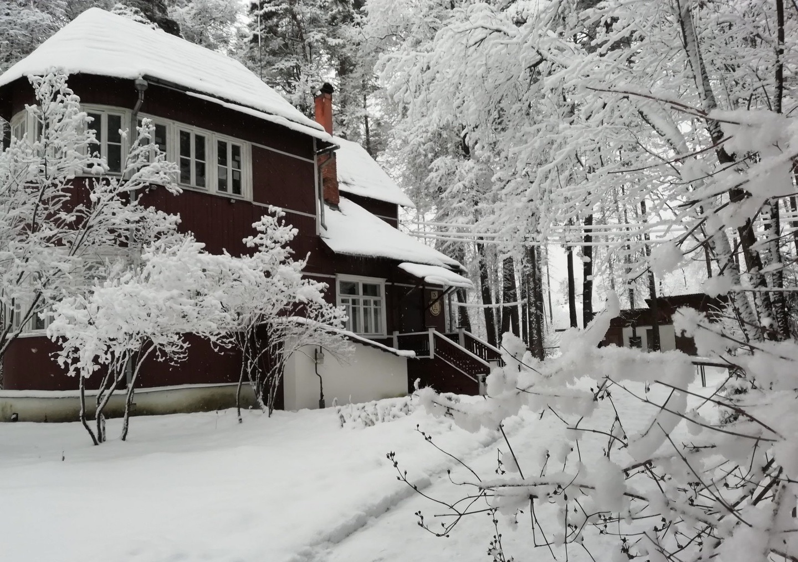
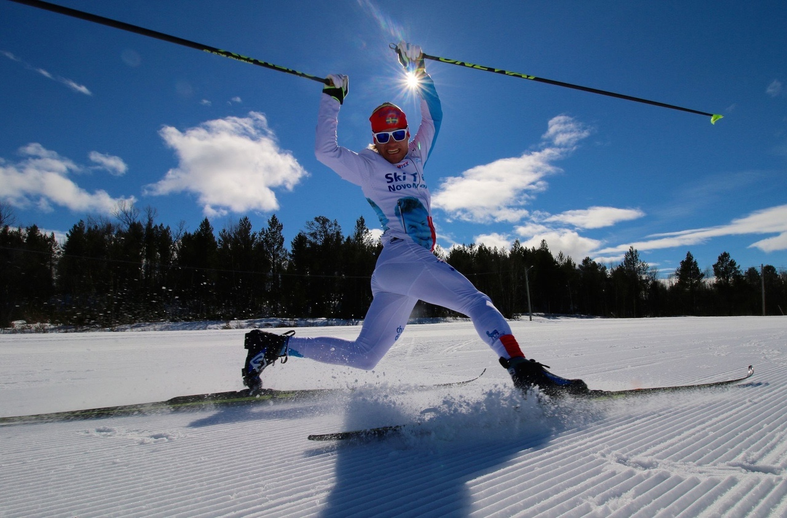
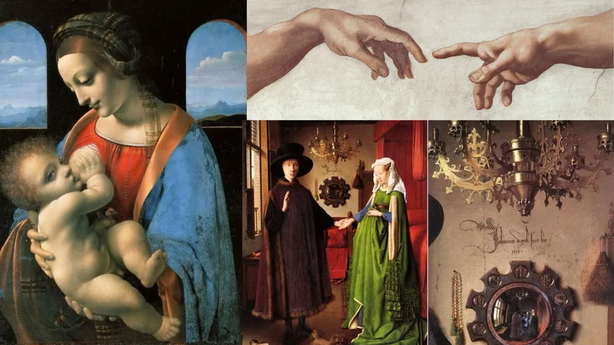

Сканди-мероприятия
-

SCANDI-ПОХОД ПО ЗЕЛЕНОМУ КОЛЬЦУ МОСКВЫ. Участок м.Пражская – м.Царицыно
19 января 2025г 10.00
Зелёное кольцо Москвы - это пешеходный маршрут протяжённостью 160 километров, который проходит по паркам и зелёным зонам с минимальными переходами по городским улицам и опоясывает таким образом Москву.
На пути встречается множество достопримечательностей — есть возможность увидеть не просто зеленые парки, но и самые красивые виды города, исторические места и много интересных и неизвестных памятников столицы.
Маршрут подходит как для семейных прогулок, так и для тренировок спортсменов в беге, маунтинбайке, скандинавской ходьбе. Зимой — для занятий лыжами.
Автор маршрута Александр Советов.
Увидим парки:
Парк Родная гавань
Покровский парк
Бирюлевский дендропарк
Музей-заповедник Царицыно
Участок протяженностью около 18 км
Этот участок сократить сложно, т.к. в Бирюлево нет метро.
Если планируете пройти маршрут не полностью, то от Липецкой улицы придется ехать до метро на автобусе.
Длительность полного маршрута около 6-7 часов
Нас ждёт :
• Сканди-разминка
• Дыхательная гимнастика
• Поход с наслаждением и любовью
• Дружеские кофе/чайные паузы
• Растяжка в конце маршрута
Вещи с собой:
📍Одежда и обувь спортивная по погоде.
📍Скандинавские палки берем с собой и улыбку тоже.
📍Термосы с чаем и перекусы приветствуются.
Вся организационная информация будет в телеграмм-чате
Инструктор Волосюк Маргарита
Стоимость: 1100р
ЗаписатьсяПодробнее -

Литературный сканди-поход «В гости к Борису Пастернаку»
1 февраля 2025г
НАЧАЛО: 10:00В Переделкино мы бывали уже не раз. Но ещё ни разу не посещали дачи писателей внутри. Исправляемся. Нам тем более это будет интересно, так как в нашем клубе активно развивается еще и формат «Книжного клуба». На этот раз мы зайдем в гости к поэту Борису Пастернаку. Посетим его дом-музей с экскурсией и дальше отправимся на прогулку по любимому многими Мещерскому парку.
Что ждёт на прогулке?
- Встреча у метро Новопеределкино в 9.45 и прогулка до Дома-музея Бориса Пастернака;
- Экскурсия в Доме-музее Бориса Пастернака;
- После экскурсии кофе-пауза в кафе «Груша»;
- Пешеходная часть пройдёт в парке Мещерский, где мы не просто погуляем, но и обязательно сделаем комплекс упражнений;
- Завершение сканди-прогулки метро Говорово
Продолжительность программы около 5 часов (время условное, поэтому лучше не спешить)
Пешеходная часть около 13 километров (километраж условный)
Инструктор Волосюк Маргарита
Вся необходимая организационная информация и рекомендации будут в организационном чате после регистрации.
Стоимость:
2000р (запись до 26.01.2025)
2500р (запись с 27.01.2025)В стоимость входит работа инструктора по скандинавской ходьбе, групповая экскурсия в доме Бориса Пастернака.
❗❗❗Отдельно оплачиваются входные билеты в Дом-музей Бориса Пастернака❗❗❗
300 рублей – полный билет
200 рублей – льготный билет
ЗаписатьсяПодробнее -

Лыжный выходной в Битце
8 февраля 2025г
НАЧАЛО: 14:00Спортсмены и любители Скандинавской ходьбы часто слышат шутку «где лыжи забыли?». Вот мы и решили не забывать лыжи и устроить тренировку с профессиональным тренером по лыжным гонкам Андреем Степановым на базе лыжной трассы Альфа-Битца.
Правильная техника важна во всем, вот мы и постараемся узнать из первых уст чем же все-таки лыжные палки отличаются от скандинавских. Нас ждёт 2-часовая тренировка на беговых лыжах. И даже если вы не стояли на лыжах со школы, то подумайте «когда еще попробовать, если не сейчас?!».
База располагает пунктом проката, так что все необходимое оборудование мы можем взять на месте. Можно присоединиться со своими лыжами тоже. Если нам понравится, будем практиковать и в дальнейшем такие тренировки и выезды выходного дня.
Лыжная трасса Альфа-Битца расположена на 36 км МКАД (остановка «Зона отдыха Битца»). Рядом есть парковка.
Точное место встречи и время будут указаны в организационном чате после регистрации. Стоимость занятия: 3000 рублей (при регистрации до 02.02.2025) 3500 рублей (при регистрации 03.02 – 07.02.2025) Отдельно оплачивается прокат оборудования. Ссылка на прайс проката будет в организационном чате.
Стоимость:
3000р (запись до 02.02.2025)
3500р (запись с 03.02.2025)❗❗❗Отдельно оплачивается прокат оборудования. Ссылка на прайс проката будет в организационном чате.❗❗❗
ЗаписатьсяПодробнее -

Интеллектуальный бранч. Тема «Тайные знаки в живописи: «читаем» картины разных времён».
9 февраля 2025г
НАЧАЛО: 12:00Наш клуб открывает серию интеллектуальных бранчей (brunch англ. поздний завтрак) с невероятно интересной темы и очень интересного лектора. С Ириной Макаровой мы встретимся впервые и однозначно это будет не одноразовая встреча.
Мы уже убедились, что разговоры об искусстве, книгах, фильмах и т.п. увлекают многих, поэтому мы и решились расширить наш формат. Подобные встречи будут проходить в дружеской и уютной атмосфере. Заботой и дружелюбием нас встретит гастро-бар «Дневник». Находится он в самом центре Москвы на Столешниковом переулке. Так что если у вас запланированы будут дополнительные встречи, будет хорошая возможность успеть совместить всё.
Итак, тема лекции «Тайные знаки в живописи: «читаем» картины разных времён».
Что скрывает от нас Мона Лиза? Как узнать сюжет картины по изображению птицы? Почему святая Лючия держит глаза на подносе?
Есть еще множество вопросов, на многие из них ответит лектор, сотрудник ГМИИ им А. С. Пушкина, кандидат наук, искусствовед Ирина Макарова.
На лекции мы попытаемся расшифровать загадки художников, найдем скрытые автопортреты, вспомним важную символику и сюжеты картин от эпохи Возрождения до ХХ века.
Продолжительность лекционной части минимум 1,5 часа (зависит также от заинтересованности участников, запасом времени лучше располагать)
Стоимость:
4000р (запись до 02.02.2025)
4500р (запись с 03.02.2025)Завтрак входит в стоимость (на выбор круассан с окороком или лососем, овощной салат, чай).
Десерт, кофе и другие напитки оплачиваются дополнительно.
ЗаписатьсяПодробнее -

Scandi-экскурсия «Потаенное Замоскворечье. Полянка и окрестности»
15 февраля 2025г
НАЧАЛО: 12:45Замоскворечье — один из тех исторических московских районов, где до сих пор сохранилась атмосфера старины: не случайно местные достопримечательности становятся целью многочисленных экскурсий. Вот и мы не обойдем вниманием этот уютный уголок Москвы и прогуляемся в сопровождении нашего гида Василия Злотникова.
Встречаемся строго 12.45 слушаем куранты храма Григория Неокесарийского. После экскурсионной прогулки продолжим наше сканди-путешествие в парк Музеон (по желанию)
Что увидим?
- дом теремок, богадельня увечных воинов, икона Скоропослушница.
- дом с мезонином - усадьба Ежиковых.
- особняк Новиковых. Неоготика!
- доходный дом архитектора С. Ф. Воскресенского
- учительский институт
- клинику, где лечился Сергей Есенин
Посетим музей В.А. Тропинина и московских художников его времени.
После посещения музея продолжаем прогулку по Большой Ордынке с осмотром красивых домов.
- доходный дом Ижболдина
- усадьба Давыдова
- посольство Аргентины
- Малый театр.
Окончание экскурсионного маршрута у метро Добрынинская.
Остановка на перекус в одном из кафе для желающих продолжить путешествие в формате сканди-прогулки. В формате сканди-прогулки посетим парк Музеон и закончим наш маршрут у метро Парк культуры.
Продолжительность экскурсионной части около 3х часов.
Продолжительность всего мероприятия около 6 часов.
Пешеходный маршрут порядка 7 км.
Инструктор Волосюк Маргарита
Вся организационная информация будет доступна в чате после регистрации.
Стоимость:
2000р (запись до 09.02.2025)
2500р (запись с 10.02.2025)В стоимость входит: полностью экскурсионно-спортивное сопровождение, использование аудиогидов.
Дополнительно оплачивается: входные билеты в музей В.А.Тропинина, обед.
ЗаписатьсяПодробнее